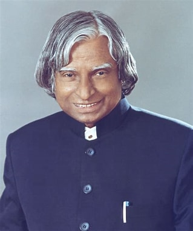

Dr. A.P.J. Abdul Kalam: The Missile Man of India

Avul Pakir Jainulabdeen Abdul Kalam, fondly known as Dr. A.P.J. Abdul Kalam, was an illustrious aerospace scientist and the 11th President of India. Born on October 15, 1931, in Rameswaram, Tamil Nadu, Dr. Kalam's life journey from a small town boy to a globally renowned scientist and statesman is incredibly inspiring.
Why Dr. A.P.J. Abdul Kalam is My Role Model
- Visionary Scientist: Dr. Kalam played a pivotal role in India's civilian space program and military missile development, earning him the title of the "Missile Man of India." His work on the development of ballistic missile and launch vehicle technology significantly advanced India's defense capabilities.
- Inspirational Leader: As the President of India from 2002 to 2007, Dr. Kalam was a people's president. He connected with the youth and inspired millions with his simple living, humble nature, and profound wisdom.
- Education Advocate: Dr. Kalam was passionate about education and believed in empowering the youth through knowledge. His interactions with students and his numerous books, including "Wings of Fire" and "Ignited Minds," continue to motivate young minds.
- Humanitarian and Visionary: His vision for India, encapsulated in the plan for transforming India into a developed nation by 2020, showcased his commitment to the country's progress. He emphasized sustainable development and the importance of science and technology in addressing societal challenges.
Notable Contributions
Dr. Kalam's contributions to science and technology are immense:
- Integrated Guided Missile Development Program (IGMDP): Spearheaded the development of missiles like Agni and Prithvi.
- Pokhran-II Nuclear Tests: Played a crucial role in the success of India's nuclear tests in 1998, positioning India as a nuclear power.
- Space Research: Contributed to the launch of India's first Satellite Launch Vehicle (SLV-III), which deployed the Rohini satellite in near-earth orbit.
- Education and Youth Engagement: Authored numerous books and conducted countless interactive sessions with students across the country.
Inspirational Quotes
"You have to dream before your dreams can come true."
"If you want to shine like a sun, first burn like a sun."
"Dream, dream, dream. Dreams transform into thoughts and thoughts result in action."